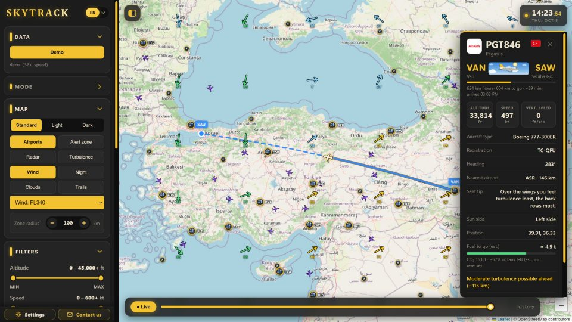

./skytrack
SkyTrack
UygulamaAçık veri
Açık ADS-B verisiyle canlı uçak takibi. Hesap ya da API anahtarı istemez; rota üzerindeki türbülansı gösterir, izlenen uçuş için uyarı verir, güneşin hangi tarafta olduğuna göre koltuk önerir.
- Windows, macOS ve Linux; Electron ve Leaflet ile
- 15 dil ve tarayıcıda çalışan bir web demosu
- Her push'ta GitHub Actions ile testler
- 208 commit'in 191'i Claude ile ortak yazıldı